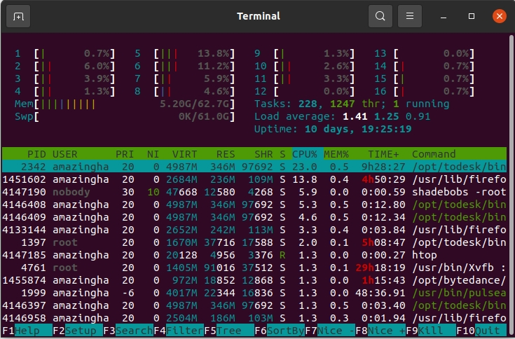
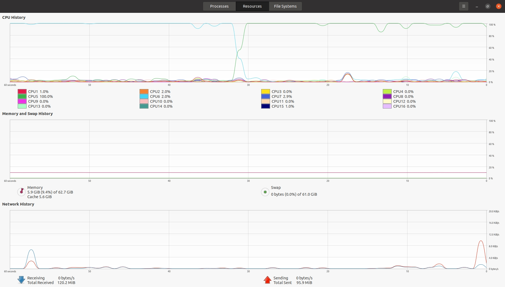
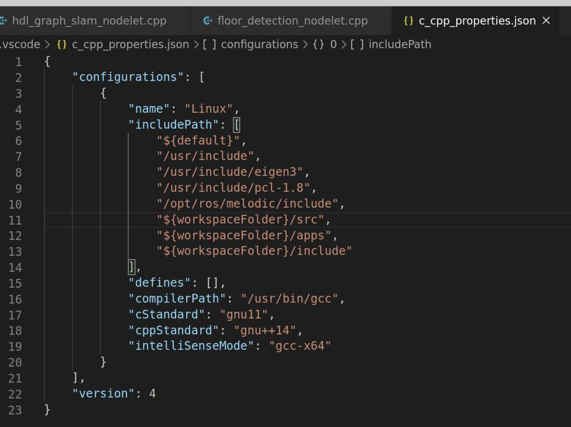

Common Product Tool
GPU-Burn
- GPU压力测试。
Tmux
- Linux终端，一个好处是只需要开一个终端window就可以通过tmux开很多个pane这样，通过tab切换不同的应用程序，使用pane在一个窗口内切换不同的pane。
- tmux可以在后台运行，即使关闭终端window，后台的程序也不会断开。
安装方法
1 | |
使用
1 | |
其他快捷键
| key | what it does |
|---|---|
| ctrl-b, % | split the screen in half from left to right |
| ctrl-b, " | split the screen in half from top to bottom |
| ctrl-b, x | kill the current pane |
| ctrl-b, |
switch to the pane in whichever direction you press |
| ctrl-b, d | detach from tmux, leaving everything running in the background |
| ctrl-b(按住), |
adjust the size of the pane |
| ctrl-b,[ | make the mouse scrolling enable |
其他更多快捷键，参见github-tmux-cheatsheet。
一些小问题
1 | |
正确的解决方案应该是，由于服务器采用本地集群的方式开放了一个公网端口，使用ssh连接非常容易出现断联的情况，因此应该使用tmux构建进程，使得进程在服务器本地运行，使得进程和本地窗口解除绑定，这样运行的程序就是在远端的本地进行的。
TOP
显示了系统总体的 CPU 和内存使用情况，以及各个进程的资源使用情况。详情见这里。
不需要安装，默认Ubuntu自带。常见缩写， 涉及Linux cpu负载相关知识：
Idle： 处于空闲状态，没有任务需要调度。
id：空闲状态的时间占比。
avg：？？
sy：内核态代码的运行时间比，sy高说明内核占用太多资源，或者用户进程发起了太多的系统调用。
ni：niceness不为0的进程代码运行时间比，默认情况下，进程的niceness值都为0，但可以通过命令nice来启动一个进程并指定其niceness值，niceness的取值范围是-20到19，值越小，表示优先级越高，越优先被内核调度。
hi&si：这两个值反映了CPU有多少时间花在了中断处理上，hi（hardware interrupts）是硬件中断，si(softirqs)是软件中断。硬件中断一般由I/O设备引起，如网卡、磁盘等，发生硬件中断后，CPU需要立即处理，当硬件中断中需要处理的事情很多时，内核会生成相应的软中断，然后将耗时且不需要立即处理完成的操作放在软中断中执行，比如当网卡收到网络包时，需要CPU立即把数据拷贝到内存中去，因为网卡自带的缓存较小，如果不及时处理的话后面的数据包就进不来，导致丢包，当数据拷贝到内存中之后，就不需要那么着急的处理了，这时候可以将处理数据包（协议栈）的代码放在软中断中执行。
wa：处于I/O等待状态的时间占比。通常情况下，当CPU遇到一个I/O操作时，会先触发I/O操作，然后去干别的，等I/O操作完成后，CPU再接着继续工作，但如果这时系统比较空闲，CPU没有别的事情可以做，那么CPU将处于等待状态，这种处于等待状态的时间将会被统计进I/O wait，也就是说CPU处于I/O wait状态即CPU闲着没事干在等I/O操作结束，和idle几乎是一样的。这个值高说明CPU闲且I/O操作多或者I/O操作慢，但低并不能说明没有I/O操作或者I/O操作快，有可能是CPU在忙别的，所以这只是一个参考值，需要和其他的统计项一起来分析。
使用
1 | |
Htop
安装方法
1 | |
使用
1 | |
示例图如下所示：

其他快捷键
通过F2可以实现进阶操作，比如修改配色，在F2之后的color界面，通过鼠标或者键盘上下键可以切换颜色，比如Broken gray就比默认颜色更好一些。
ESC可以退出编辑。在htop界面都有写。
查看硬盘IO，htop同样可以参考这里可以实现。（本身top是可以的，此外有iotop这样的软件可以用）。
F2->Setup->Display Option，点击空格选中“Detailed CPU time”；
选择Setup->Meters，使用右箭头和上下箭头键，选中Available meters->CPU average计数器，添加到Right column；
在Right column中添加后，用上下箭头、回车调整位置，然后按空格，修改计数器类型为CPU(Text)。
之后在htop中就会出现如下所示的栏，表示硬盘io率。
- 设置完之后还需要保存设置，才能在下一次打开htop时保持和之前一样的设置。但是我设置F10没有用。
Ubuntu20.04自带的System Monitor
- 其实自带的就很好用，那些花里胡哨的反而比较麻烦。可以看系统，进程，和文件系统。

lm-sensors
- 用于查看风扇温度， 比如新装了电脑如果CPU支持超频，那么打开CPU超频的话就会导致水冷风扇转速和降温效果达到最高，甚至有点异响。或者用于检查其他硬件是否有问题。
安装方法
1 | |
使用
1 | |
就会得到如下的显示：
1 | |
Filezilla
- 往已知IP的远程服务器上传输大量的数据。
安装方法
1 | |
使用方法
1 | |
- 可以调整文件传输并行线程数。
- 不同平台的文件编码方式差异导致文件传输之后无法识别的问题。
Putty
VSCode
连接服务器
在本地雞上使用ssh -L 10008:127.0.0.1:10008 root@IP將服務器的端口映射到本地，（windows不需要这一步就可以做到，直接vscode连接了之后就行）
在服務器上使用tensorboard --logdir='/root/lyh/code/AE-CrossModal/log/checkpoints/May17_11_25_14_spherical' --port=10008打開tensorboard。
這樣本地才能通過瀏覽器http://localhost:10008看到。
配置C++开发环境
在vscode中可以以直接运行的方式跑C++程序，前提是按照如下的方式配置：

fuser
Git
出现代码没有修改，但是git diff提示很多改动。如下：
1 | |
解决方案：
1 | |
Git推送代码时出现问题，fatal: CRLF would be replaced by LF in:
解决方案：
1 | |
Github中存储大量的数据，如何快速下载？
解决方案：因为大文件使用的是LFS，是Git Large File Storage（LFS），因此需要在Git安装并配置好SSH密钥，连接到GitHub、huggingface或其他代码仓库。
- LINUX系统：
1 | |
也可以通过软件包管理器（如yum或apt）安装Git LFS。
- Windows系统：
直接：git lfs install如果显示Git LFS
initialized说明已经OK。然后再git clone就行了。
HuggingFace数据的快速下载
使用官方huggingface_hub可以更加高效一些，然后在使用的时候再从本地加载。github一个下载加速的快捷工具HuggingFace-Download-Accelerator。
首先安装huggingface_hub，但是这个安装的时候与网络有很大的关系，很容易出现网络错误。
1 | |
命令行下载：(比如下载CV-Cities数据集)
1 | |
- 如果下载失败了之后，重新运行的话，还可以续下。
如果是需要在代码中下载权重，那么在python
xx.py之前添加HF_ENDPOINT=https://hf-mirror.com可以提升下载速度。然后再转到本地存储下来避免二次下载。
Torchhub模型的快速下载
如果想站在预训练好的大模型上进一步开展工作，可以使用如下的方式加载一个模型：
1 | |
这种方式需要联网下载，但是有时候网络实在是一言难尽，因此需要换一种方式。
联网下载的模型权重一般存放在/root/.cache/torch/hub/checkpoints/这里。例如，我的该路径下有：
1 | |
因此，如果想要离线加载模型，需要手动下载对应的权重，然后拷贝到/root/.cache/torch/hub/checkpoints/路径下，并在上一级目录中手动下载对应的模型文件仓库（其中的hubconf.py文件很重要）。
- 这一步可以写一个脚本，一次性移动到指定位置。
然后加载模型的方法就变成了。
1 | |
pip库安装
1 | |
1 | |
1 | |
1 | |
1 | |
1 | |
1 | |
1 | |
1 | |